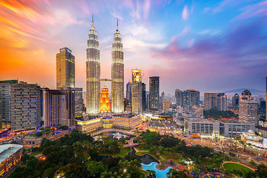

Kuala Lumpur
Discover Malaysia's lively capital and its famous Petronas Twin Towers.

Malaysia is a beautiful country located in Southeast Asia. It is famous for its modern cities, tropical islands, green mountains and rich cultural heritage. Malaysia attracts tourists from all over the world. Its beautiful landscapes and friendly people make it a wonderful tourist destination.
Kuala Lumpur is the capital city of Malaysia. The famous Petronas Twin Towers are one of the most popular attractions in the country. Visitors can enjoy shopping, sightseeing and delicious traditional Malaysian food.
Malaysia is also known for its beautiful islands, historical buildings and natural attractions. Langkawi offers peaceful beaches, while Penang is famous for its history, street art and food.
Tourists can explore the beautiful Cameron Highlands, enjoy the cool weather and visit green tea plantations. Malaysia provides wonderful experiences for families, friends and adventure lovers.
Malaysia is a perfect destination for people who love nature, culture, history and adventure. Discover the beauty of Malaysia and enjoy unforgettable travel experiences.